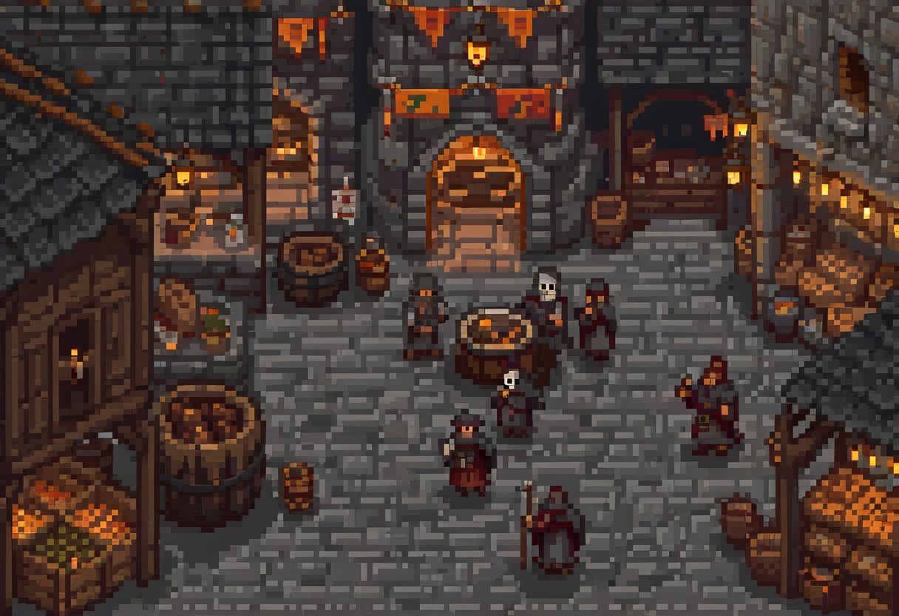

9 Web Security & Data Protection

The web is where most of us are attacked, because it’s where most of us are. And behind every web app is data someone is legally obliged to protect.
Almost everything now runs through a web browser: banking, work, government, shopping, social life. That makes web applications the single largest attack surface most organisations have. It is also the place where ordinary people are most likely to meet an attack. This chapter has two halves that turn out to be one story. The first is how web applications get attacked, the handful of flaws behind a huge share of real breaches. The second is what the law requires of the data behind them. When a web flaw leaks personal information, it stops being only a technical problem and becomes a legal one. A web vulnerability is also a privacy incident.
9.1 What this chapter covers
By the end you should be able to:
- Explain the most common web vulnerabilities (injection, XSS, broken authentication, session issues) at a working level.
- Trace how a web attack unfolds, step by step.
- Explain core data-protection obligations (privacy principles and mandatory breach notification) with the major regimes as examples.
- Connect web weaknesses to the data-protection consequences when they’re exploited.
9.2 Why the web is the front line
A web application is, almost by definition, exposed: it exists to accept requests from strangers over the internet. Every input field, URL, and uploaded file is a place where untrusted data enters your system, and the browser on the other end is a universal client you don’t control. The core weakness behind most web attacks is a single recurring mistake: trusting input that should never be trusted. Data arriving from a user is treated as if it were safe, and the attacker’s craft is to make that data do something it was never meant to.
9.3 Injection: when data becomes commands
The archetype is injection, and its most famous form is SQL injection. A web application builds a database query using something the user typed, a search term or a login name. If the application glues the user’s input into the query text, an attacker can type input that becomes part of the command itself. Instead of a username they submit a fragment that changes what the query does: turning “find the user named X” into “find every user,” or worse, “delete the table.” The database, unable to tell the developer’s intent from the attacker’s addition, obeys.
Injection generalises beyond databases. Any time untrusted input is fed into something that interprets commands (a database, the operating system, a template engine), the same flaw can appear. And the defence generalises too: keep data and code separate. Rather than build a command by pasting text together, use mechanisms (parameterised queries, prepared statements) that hand the input to the system explicitly as data, so it can never be mistaken for instructions. Validate what comes in, and give the application only the database privileges it needs, so a successful injection does less damage.
9.4 Cross-site scripting: running attacker code in your browser
Cross-site scripting (XSS) is injection aimed at the other users of a site rather than its database. It is worth understanding because it explains how an attacker ends up running code in your browser without ever touching your machine.
A site lets users submit content (a comment, a profile, a message) and displays it back to other users. If the site fails to treat that content as untrusted, an attacker can submit a small script instead of ordinary text. When another user views the page, their browser receives that script as part of the trusted site’s page and runs it in the site’s context, with the victim’s session. Now the attacker’s code, executing as if it were the site itself, can read the victim’s session token, act as them, redirect them, or deface what they see. The victim did nothing wrong except visit a page they had every reason to trust. (Tracing that path in your own words is the first question at the end. It is the clearest way to show you understand XSS.) The defence mirrors injection: treat all user content as untrusted, and encode it on the way out so the browser renders it as text to display rather than code to run.
9.5 Authentication and session weaknesses
The web has a structural quirk that creates its own class of attacks. The protocol underneath is stateless: each request stands alone, with no memory of the last. So after you log in, the server issues a session token (usually stored in a cookie) that your browser sends with every subsequent request to say “it’s still me.” That token is your authenticated session. Anyone who steals it can impersonate you without ever knowing your password. This is session hijacking, and it’s why the sniffing and XSS attacks in this book are so dangerous: they’re often after the token rather than the password. A related trick, session fixation, has the attacker plant a session identifier they already know, then wait for the victim to log in under it. The defences are concrete: send tokens only over HTTPS so they can’t be sniffed, flag cookies so scripts can’t read them and they don’t leak, issue a fresh token at login, and expire sessions so a stolen one doesn’t last forever.
9.6 The other side: protecting the data
Behind every one of these attacks is data. Increasingly it is personal data, and the law now requires its protection. Modern data-protection law sets out principles for handling personal information that recur across jurisdictions: collect only what you need and only lawfully; use it only for the purpose you stated; keep it accurate; secure it; don’t retain it longer than necessary; and let people see and correct what you hold about them. Australia codifies these as the Australian Privacy Principles (APPs) under its Privacy Act; the EU’s GDPR is another version of the same pattern; other countries have their own. The names differ; the shape is consistent. The point for a defender is that security is written into the law. Failing to protect personal data breaches a legal obligation.
9.6.1 When it breaks: breach notification
The law also dictates what happens when protection fails. Most modern regimes include a mandatory breach-notification duty: if personal data is compromised in a way likely to cause serious harm, the organisation must tell the regulator and the affected people, often within a tight deadline. Australia’s Notifiable Data Breaches (NDB) scheme requires it; the GDPR sets a 72-hour clock, which is why the incident-planning chapter’s crisis ran against that deadline. These rules exist for two reasons: so affected people can protect themselves (change passwords, watch their accounts, freeze their credit) and to create an incentive for organisations to secure data properly, since a breach can no longer be buried. The second question at the end asks about this. Notification turns a private failure into a public, accountable one by design.
9.7 A web flaw is a privacy incident
A single injection or XSS flaw that spills a customer database is, in the same instant, a technical failure and a legal event: it triggers the notification clock, exposes the organisation to regulatory penalty, and damages the trust that is the acquired value from the risk chapter. This is why web security and data protection belong in one chapter. The vulnerability and the consequence are two faces of one event. A defender who sees only the code half, or only the legal half, misses how the whole thing plays out.
9.8 Where this connects
This chapter connects to several others. Authentication is central because the session tokens attacked here are how the web remembers you are logged in, and stealing one sidesteps the password. Network security matters because sniffing and man-in-the-middle attacks are common ways session tokens get stolen, which is why HTTPS matters. Incident & disaster planning shares the breach-notification clock here, the same one that drives a real breach response.
9.9 Questions to consider
- In plain words, how does a cross-site scripting attack end up running an attacker’s code in your browser, on a site you trust?
- A company is breached and customer data leaks. Under a mandatory breach-notification scheme, what are they obliged to do, and why does that obligation exist at all?
- If an attacker steals your active session token, what can they do that they couldn’t with just your username, and what, if anything, can they still not do?